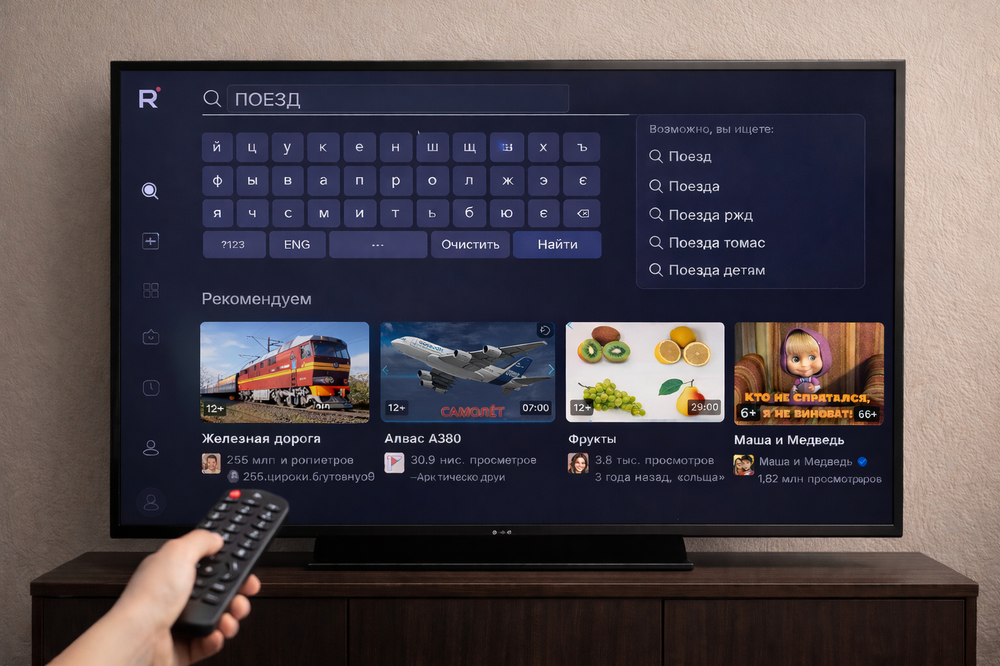
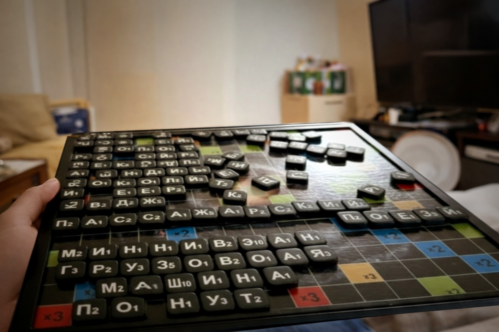
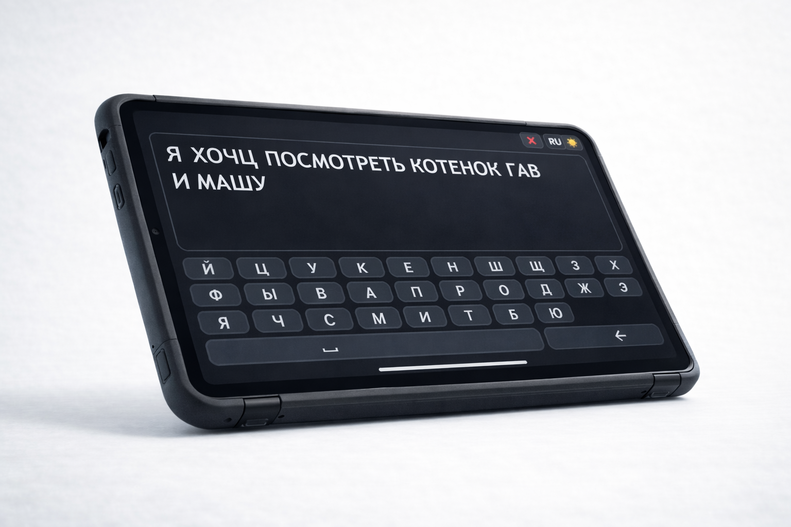
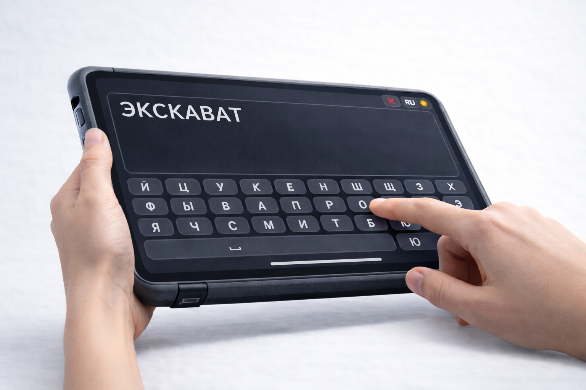
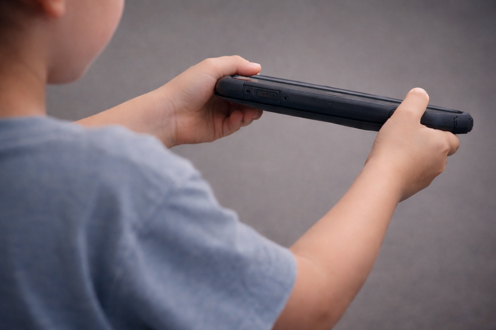
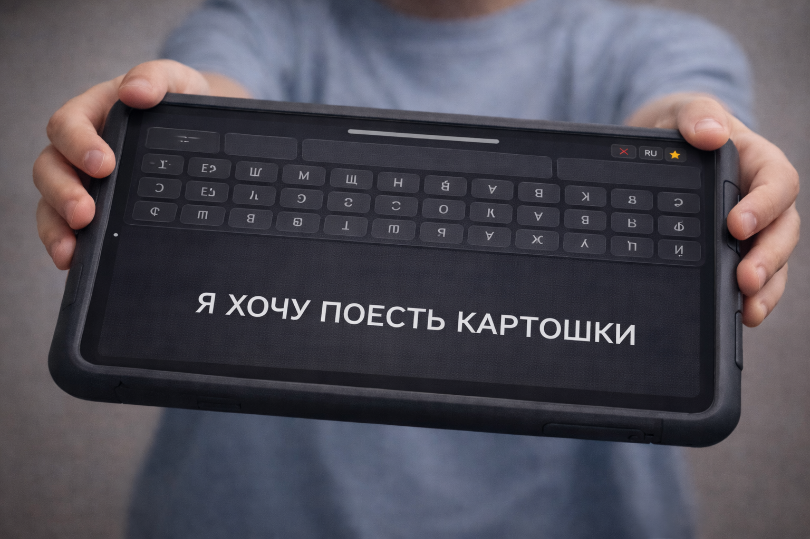
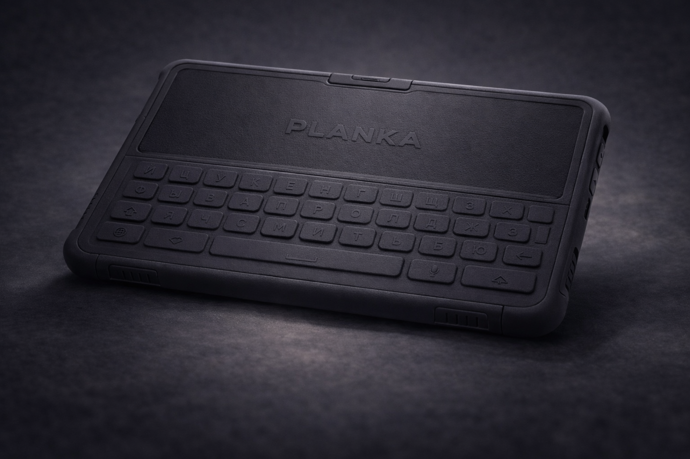
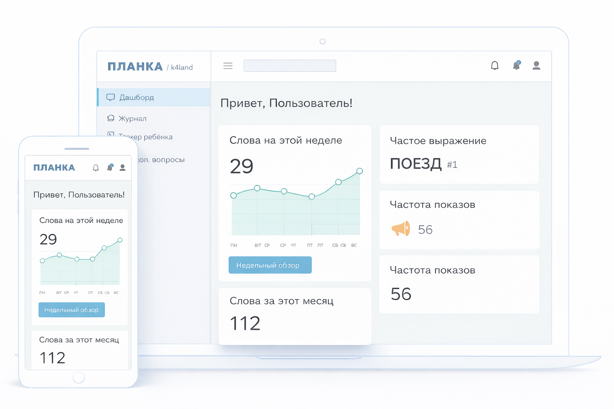
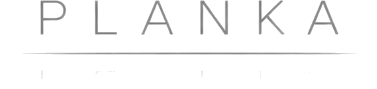

PECS
Сильные стороны: Структура коммуникации. Быстрый старт. Низкий порог входа.
НО: Набор карточек конечен: новые смыслы не формулируются без расширения набора.
Требование: Среда должна быть открытой для новых слов и масштабируемой по словарю.
Просто не голосом
Каждый этап уже показал сильные стороны — и свои границы.
Требования к следующей среде

PECS
Сильные стороны: Структура коммуникации. Быстрый старт. Низкий порог входа.
НО: Набор карточек конечен: новые смыслы не формулируются без расширения набора.
Требование: Среда должна быть открытой для новых слов и масштабируемой по словарю.
Требования к следующей среде

Магнитные буквы
Сильные стороны: Свобода сборки слов. Моторная вовлеченность. Понятная сетка.
НО: Количество букв физически ограничено, а набор может ломаться и теряться.
Требование: Среда должна поддерживать неограниченный словарь и не зависеть от физического набора.
Требования к следующей среде

Листочки
Сильные стороны: Самостоятельное письмо. Личное авторство. Гибкость использования.
НО: Записи распадаются по разным листам: нет единой истории и общего контекста.
Требование: Среда должна сохранять записи в едином пространстве и поддерживать их структуру.
Требования к следующей среде

Пластилин
Сильные стороны: Символ формируется через движение. Высокая моторная вовлеченность. Наглядность формы.
НО: Длинные слова и фразы трудно переносить, хранить и предъявлять целиком.
Требование: Среда должна принимать полные формулировки мысли без подсказок и подмены.
Требования к следующей среде

Телевизор / поиск
Сильные стороны: Визуальная опора на правильное написание. Тренировка орфографии.
НО: Это внешний потребительский интерфейс, а не личный контур коммуникации.
Требование: Среда должна быть личным инструментом коммуникации, а не внешним интерфейсом потребления.
Требования к следующей среде

Эрудит
Сильные стороны: Предсказуемая сетка. Стабильная форма поля. Концентрация.
НО: Размер поля фиксирован: длина мысли ограничивается пространством.
Требование: Среда должна сохранять предсказуемость формы и масштабироваться по длине мысли.
Все требования сходятся к одному: среда должна быть предсказуемой, масштабируемой, личной и не вмешивающейся в формулировку мысли.
Проектирование началось с изучения и чертежа.
Не с выбора инструмента и не с выбора цвета.
С вопроса о среде, созданной только для письма.
Среда письма — это не приложение и не меню.
Это ограниченное пространство, в котором форма поддерживает мысль.
Две строки без скролла.
Отсутствие автодополнения.
CAPS по умолчанию.
Это не ограничения ради упрощения.
Это форма, в которой мысль сохраняет целостность.



Текст «ВИННИПУ», палец завис над «Х».

Наклон от себя: вид сбоку/торец, экран не читаем.

Текст обращен к собеседнику. Взрослый: «Хорошо, посмотри.»

Возврат к персональному режиму ввода.
Написал -> Показал -> Получил реакцию -> Продолжил.
Жест — это граница между личной мыслью и предъявленной мыслью. Устройство не говорит за него. Он сам выбирает момент предъявления.

Внутри — только среда письма.
Без уведомлений.
Без сторонних приложений.
Без фонового шума.

Свобода и контроль собственной мысли.

Поверхность понимания. Не вмешательство.
Контуры не пересекаются.
Центр — устойчивые, часто предъявляемые кванты мысли.
Периферия — новые и ситуативные.
Рост — это расширение пространства мысли при сохранении формы.
Предъявленная мысль становится устойчивой и возвращаемой.
